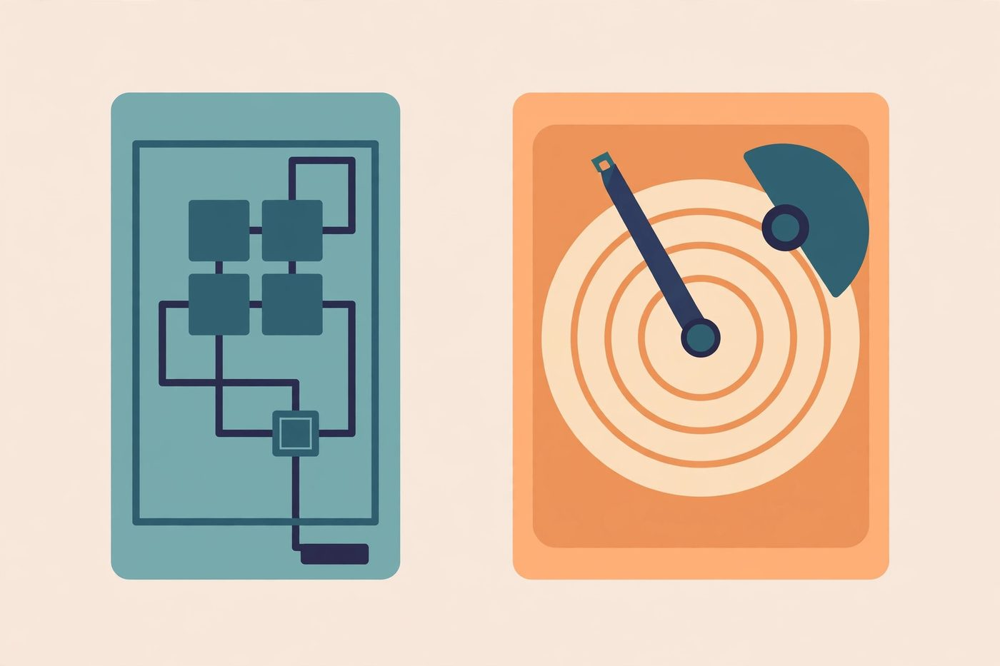

SSD vs HDD lifespan realities

"Which lasts longer, SSD or HDD?" is one of the most asked — and most misleading — questions in storage. The honest answer: both types fail, they just fail differently, and "longer" depends on how you use them. Here's a straight comparison of how each wears out, minus the marketing.
How an HDD wears out
A hard disk drive is a precision mechanical device: platters spinning at thousands of revolutions per minute, with read/write heads floating microscopic distances above them. Its enemies are the enemies of all machinery:
- Mechanical wear. Bearings, motors, and actuator parts physically wear with use. This is usually gradual — the classic slow decline.
- Shock and vibration. A knock while the drive is spinning can send the heads into the platter surface. Laptops and portable drives live dangerously here.
- Heat and age. Lubricants break down, electronics age. A drive that's been spinning for many years is living on borrowed time even if it sounds fine.
The upside of mechanical failure: it often announces itself. The clicking, grinding, and slowdowns give you a window — sometimes days, sometimes weeks — to get your data off.
How an SSD wears out
A solid-state drive has no moving parts. Instead it stores data in flash memory cells that physically degrade a tiny bit with every write. Its enemies are different:
- Write endurance. Each cell survives a finite number of write cycles. For typical home use — documents, photos, even gaming — this limit is generous and most users will never approach it. Heavy, constant writing (video scratch disks, servers, some professional workloads) gets there faster.
- Controller and electronics failure. The SSD's controller chip, firmware bugs, or power circuitry can fail — and this can happen at any age, with little or no warning.
- Power events. Sudden power loss during a write is harder on SSDs than many people expect; a good power supply and a UPS for desktops are cheap insurance.
- Heat. Fast NVMe SSDs in particular can run hot in cramped cases; sustained heat shortens electronic life.
The downside: SSDs tend to fail more suddenly than HDDs. A drive that's been perfect for years can become unreadable with little warning. "Less warning" doesn't mean "less reliable" — it means monitoring and backups matter even more, because you can't count on a noisy death rattle to tip you off.
The honest comparison
- Neither type is "safe." Both can die young from defects and both can run for many years. Anyone promising you one type never fails is selling something.
- HDDs usually warn you; SSDs often don't. This is the most practical difference. It doesn't make HDDs better — it makes SSD owners more dependent on backups.
- Use case matters more than type. A drive that's mostly read from (media storage, games library) lives an easier life than one that's constantly written to, regardless of technology.
- Age is a risk factor for both. An old drive of either type deserves more frequent health checks and more current backups than a new one.
- The drive is the least reliable part of your data strategy either way. This is the real takeaway: don't pick a drive type and relax — pick a backup strategy and relax (see the 3-2-1 rule).
What to do the moment you suspect failure
Whether it's an HDD clicking or an SSD acting strangely, the protocol is the same. Do these in order:
- Stop writing to the drive. Don't install "fix" utilities on it, don't defragment it, don't keep saving files to it. Every write risks overwriting data that's becoming hard to read, and stresses failing hardware. If it's your system drive, shut the computer down rather than continuing to use it.
- Back up what matters most, first. Copy irreplaceable files — documents, photos — to a different drive or cloud storage before anything else. Most important first, biggest files last; a dying drive may not give you time for everything.
- Then diagnose. Once your data is safe, run a health check (see our free tools guide and SMART basics) to confirm the problem.
- Replace the drive; don't rehabilitate it. A drive that showed real failure signs has lost your trust permanently. Replace it and relegate the old one to non-critical duty at most.
- For irreplaceable data you couldn't copy: call a professional. Data recovery labs have clean rooms and specialized equipment. Do not open the drive yourself, freeze it, or run repeated recovery scans on failing hardware — DIY heroics are how recoverable data becomes unrecoverable. The sooner a failing drive reaches professionals, the better their odds.
The bottom line
SSDs and HDDs are different machines with different failure personalities, but your job as their owner is identical: watch for the signs, check health periodically, and keep backups current enough that no single drive — of either type — can take anything irreplaceable with it. The technology changes; that responsibility doesn't.